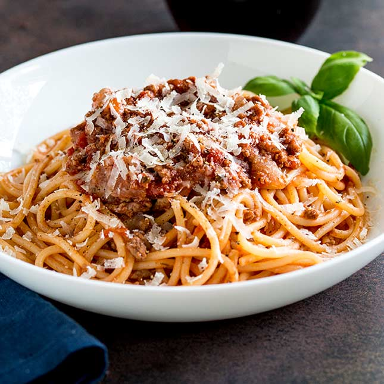

Home
Spaghetti Bolognese!

Difference between Bolognese and Meat Sauce?
Different name for the same thing! You’ll find Bolognese made all sorts of ways all across Italy and all around the world, but essentially mince meat (usually beef, sometimes combined with pork or veal) in a tomato based sauce flavoured with herbs.
5 servings
10 min prep time
30 min cook time
Total 40min
Ingredients
- 1 1/2 tbsp olive oil
- 2 garlic cloves, minced
- 1 onion, finely chopped (brown, yellow or white)
- 1 lb / 500g beef mince (ground beef) OR half pork, half beef
- 1/2 cup (125 ml) dry red wine (sub water or beef broth/stock)
- 2 beef bouillon cubes , crumbled OR granulated beef bouillon
- 800g / 28 oz can crushed tomato (or tomato passata)
- 2 tbsp tomato paste
- 2 tsp white sugar , if needed
- 2 tsp Worcestershire sauce
- 2 dried bay leaves
- 2 sprigs fresh thyme (or 1/2 tsp dried thyme or oregano)
- Salt & Pepper
To Serve with
- 400 g / 13 oz spaghetti (cooked)
- Parmesan cheese and finely chopped parsley (optional)
Instructions
- Heat oil in a large pot or deep skillet over medium high heat. Add onion and garlic, cook for 3 minutes or until light golden and softened.
- Turn heat up to high and add beef. Cook, breaking it up as your go, until browned.
- Add red wine. Bring to simmer and cook for 1 minute, scraping the bottom of the pot, until the alcohol smell is gone.
- Add remaining ingredients except salt and pepper. Stir, bring to a simmer then turn down to medium so it bubbles gently. Cook for 20 – 30 minutes (no lid), adding water if the sauce gets too thick for your taste. Stir occasionally.
- Slow simmer option: Really takes this to another level, if you have the time! Add 3/4 cup of water, cover with lid and simmer on very low for 2 – 2.5 hours, stirring every 30 minutes or so. (Note 5) Uncover, simmer 20 minutes to thicken sauce. (Note 6 for slow cooker)
- Adjust salt and pepper to taste right at the end. Serve over spaghetti – though if you have the time, I recommend tossing the sauce and pasta per steps below.
TOSSING SAUCE AND SPAGHETTI (OPTIONAL)
- Bring a large pot of salted water to boil. Add pasta and cook per packet directions MINUS 1 minute.
- Scoop out a mug of pasta cooking water and set aside, then drain the pasta.
- Add pasta into the bolognese sauce with about 1/2 cup (125 ml) of reserved pasta water over medium heat. Toss gently for 1 1/2 – 2 minutes, or until the spaghetti turns red and the sauce thickens.
- Divide between bowls. Garnish with parmesan and parsley if desired.
Reciepe Notes
- Meat –Some traditional slow cooked Bolognese Sauce are made with a mixture of beef and pork mince. Beef for flavour, pork for juiciness. I typically do not use this for midweek.
- Beef stock cubes – I use Oxo Beef Cubes (Woolies & Coles). Use any beef bouillon / stock cube or in powder form (called “granulated beef bouillon” in some countries).
- Canned tomato – Mid range canned tomato can be notoriously sour. A touch of sugar makes an incredible difference. The amount required will depend on how sweet / sour the tomatoes and tomato paste is – go by taste. Typically, the better the quality, the less sour they are so the less sugar you will need.
- Tossing pasta sauce – see commentary in post about emulsifying the pasta sauce. This is the “proper” Italian way to cook pastas, and the way pasta is served in restaurants.
- Slow simmer option -this is how you take a great bolognese to an incredible one that would make your Italian Nonna proud. The key here is ultra low heat – after bringing to simmer, lower heat so the surface is just gently rippling, with a few bubbles here and there. Once the lid has been on for a while, take a peek to check – because it gets hotter with the lid on. I use my smallest burner on the lowest setting.
Nutrition Information
per serving, assuming 5 servings, including pasta
- Serving :396g
- Calories :510 cal (26%)
- Carbohydrates :53.2g (18%)
- Protien :40.9g (82%)
- Fat :12.6g (19%)
- Saturated Fat :
- Cholesterol:143mg (48%)
- Sodium:386mg (16%)
- Potassium:1046mg (30%)
- Fiber:2.7g (11%)
- Sugar:8.49g (9%)
ENJOY